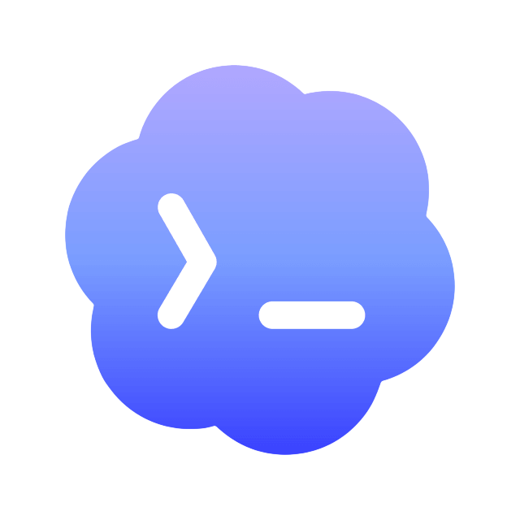

Terminais de verdade, lado a lado
Cada painel é um terminal real. Organize em grade, destaque um ou monte o seu layout, e abra abas dentro do mesmo painel.
O KyvenLab é um espaço de trabalho para Windows que roda Claude Code, Codex, Antigravity, OpenCode e terminais lado a lado, em terminais de verdade. Um Pilot divide o trabalho entre workers, e você acompanha cada um sem trocar de janela.
 Pilot#232
trabalhando
Pilot#232
trabalhando
› Dividi a tarefa em duas partes, servidor e app, e mandei cada uma para um worker.
PS> npm run build
✓ built in 18.4s
PS>
Servidor de builds#539
trabalhando
● Rodando os testes do servidor
42 de 57 passaram…

Botões de publicar#540 em revisão› Pronto. Os testes do banner passaram; aguardando a revisão do Pilot.
 Página de download#541
esperando você
Página de download#541
esperando você
? Posso publicar a página no repositório público?
Cada painel é um terminal real. Organize em grade, destaque um ou monte o seu layout, e abra abas dentro do mesmo painel.
O Pilot planeja, manda cada parte para um worker em uma cópia isolada do projeto e revisa o que volta. Você vê quem está trabalhando, em revisão ou esperando você.
As conversas e o histórico de cada terminal ficam salvos. Ao reabrir o app, tudo volta no mesmo lugar.
Um agente parado há 20 minutos hiberna e retoma a mesma conversa quando você clica nele. O uso de RAM fica visível na barra de título.
Projetos, histórico e preferências sincronizam entre os seus computadores, com criptografia de ponta a ponta. A conta é opcional: sem ela, tudo fica só no seu PC.
Leia o que o Pilot está fazendo, responda uma pergunta ou aprove um pedido pelo telefone, e receba um aviso quando alguém espera por você.
O KyvenLab encontra cada ferramenta instalada no seu PC e abre com a sua própria conta. Os limites de uso de cada uma ficam num só lugar.

Clique em Baixar para Windows e abra o arquivo KyvenLab-setup.exe.
O instalador ainda não tem assinatura digital, então o SmartScreen pode avisar. Clique em Mais informações e depois em Executar assim mesmo.
No app, abra Sincronizar e entre com o convite que você recebeu. Isso liga as atualizações automáticas.
É assim que o aviso aparece dentro do KyvenLab.
Para Windows 10 e 11, 64 bits. Versão .